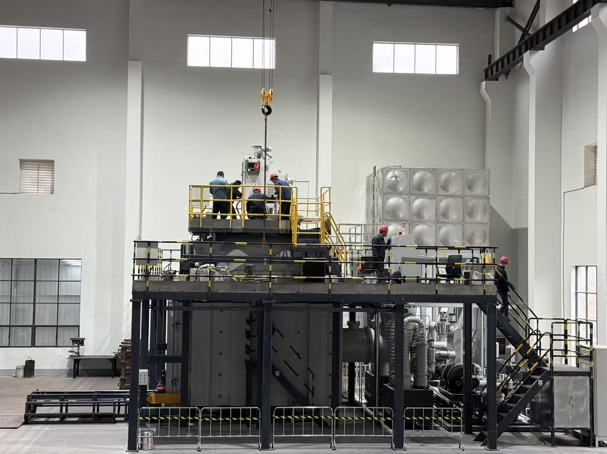
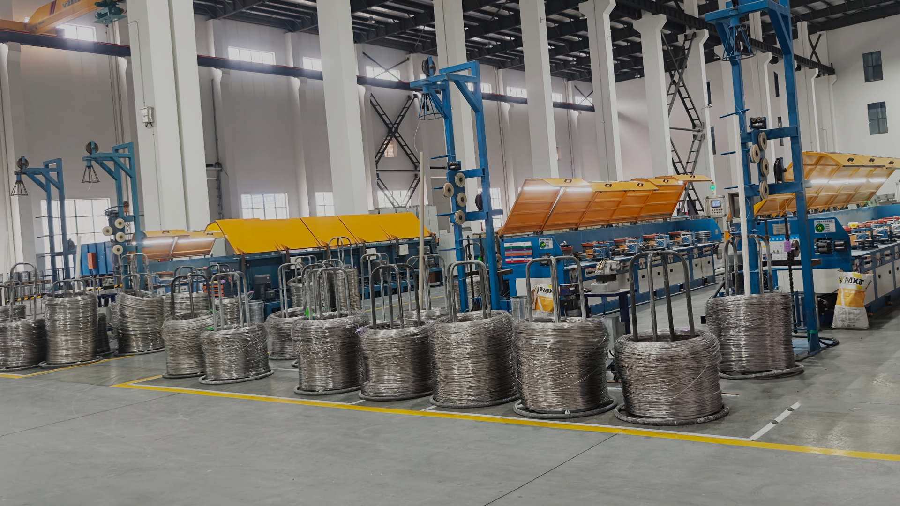

Standards & Certifications
Every product is manufactured and tested to meet international and national standards. Our official certificates are available for verification.

Obtained in 2021 and 2019 respectively, our dual quality management system certifications cover the full manufacturing lifecycle — from vacuum induction melting and alloy composition control through to dimensional inspection and shipment documentation. The GJB military certification formally qualifies YIXIN Alloy for national defence and aerospace supply chains.


All nickel alloy products are manufactured and tested against internationally recognised standards. AWS A5.14 governs welding consumable chemistry and classification, while ASTM B160 / B164 / B166 defines chemical and mechanical conformance requirements for wrought nickel alloy wire, rod, bar, sheet and strip. Every shipment includes a full EN 10204 3.1 Mill Test Certificate.


YIXIN Alloy holds both workplace safety and green enterprise certifications issued by Jiangsu provincial authorities, confirming that our 50,000 m² production facility meets national standards for employee protection, hazardous-material handling, emissions control and sustainable production practices.